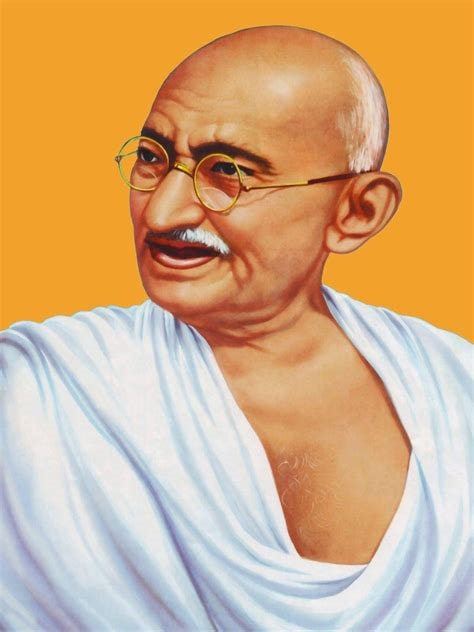
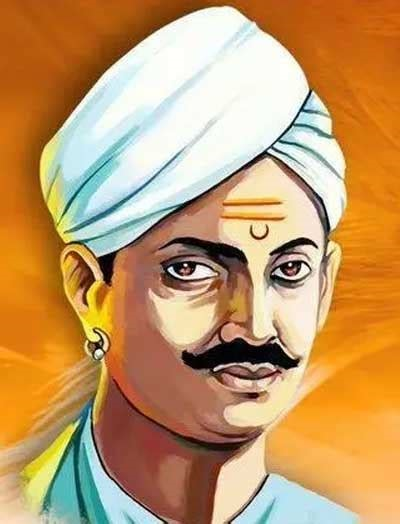
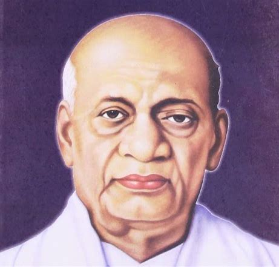
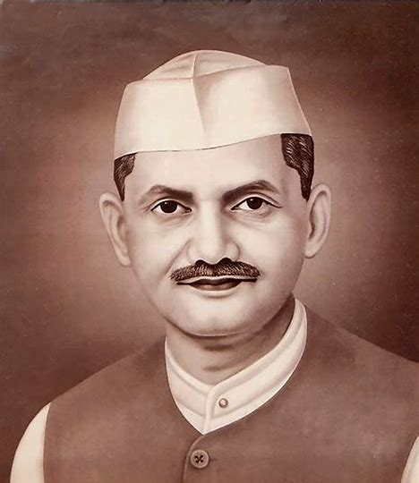
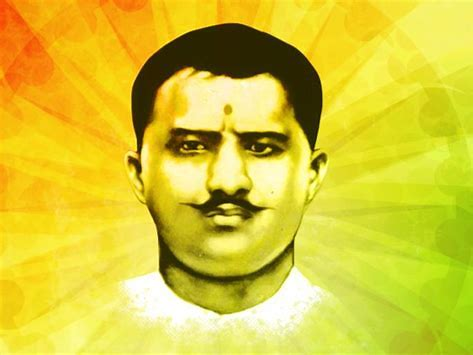
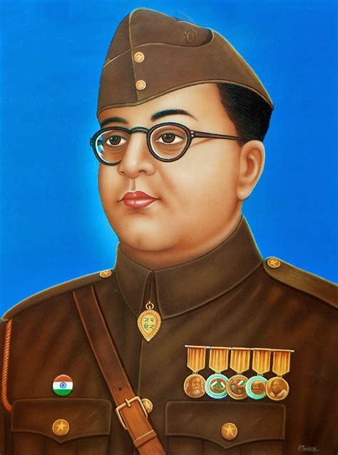
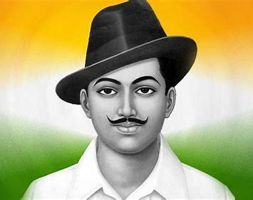
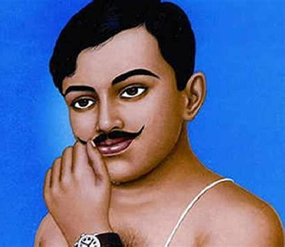
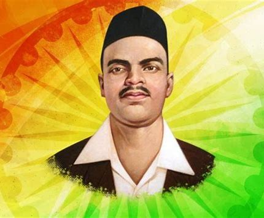
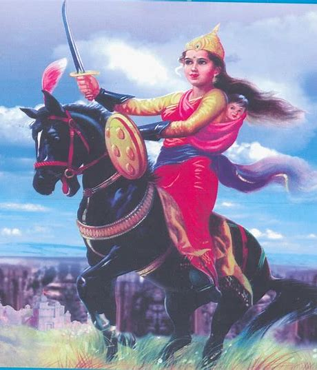

India, the largest democratic nation in the world got independence from foreign rule in 1947. It was a momentous year in the history of India when it gained freedom from the British rule that lasted for about 100 years. In 1857, the powers of British East India Company was transferred to the British Crown but the Company which was started as early as in 1600 to build colonisation and trade which gradually imposed its rule in many parts of the country, both economically and politically. Prior to that many parts of India were under the control of the Portuguese, French and the Dutch. As the Indian subcontinent had no political unity or unifying force since ancient times, many have come and controlled parts of the country. Prominent and long lasting among them were the Mughals, who ruled most parts of the present country from the 16th century through 18th century. The freedom of India is result of long and consistent struggle in many parts of the country in different forms. It was neither easy for the country to fight and expel foreign rulers from the country nor easy to unify different princely states, tribes, people fo different languages and cultures in to the idea of one nation. Many people have played significant roles in raising the national movement. Struggles lasted for decades, which finally resulted in independence of the country.
The Role of the Freedom Fighters in India The freedom fighters of India played an extensive role in getting independence for the country. The 'Revolt of 1857' was the first war of independence of India. The revolt started as a mutiny by the sepoys of the East India Company. The Muslim and the Hindu sepoys together began this revolt. Rani Lakshmibai, Mangal Pandey, Bahadur Shah Zafar, Nana Sahib and Tatya Tope were some of the active leaders and freedom fighters who fought in the revolt. Mangal Pandey is considered as the hero in the modern India because he had played a pivotal role in beginning the revolt against the British. Rani Lakshmibai is considered as the symbol of resistance to the British rule and was one of the leading figures of the rebels in 1857. In 1876, another movement started against the British rule. It was the foundation of the Indian National Congress (INC). Surendranath Banerjee laid the foundation of the party. Bal Gangadhar Tilak, Dadabhai Naoroji, Chittaranjan Das and Jawaharlal Nehru were active leaders of the INC. It was Mohandas Karamchand Gandhi who gave a push to the party and raised the struggle for freedom in a non-violent way. His Non-Cooperation Movement was a great success and a stepping stone for Indian freedom struggle. While on one side Gandhi was following the ideologies of non-violence and peace, on the other there was a group of youth who wanted to attain independence by hook or by crook. These revolutionaries were quite influential in the nation and inspired many. Chandra Shekhar Azad, Ram Prasad Bismil, Ashfaqulla Khan and Jogesh Chandra Chatterjee were some of the revolutionaries who executed the Kakori conspiracy. Bhagat Singh, Batukeshwar Dutt, Sukhdev Thapar and Shivaram Rajguru threw bomb in the assembly house. After the incident, Bhagat Singh, Sukhdev and Rajguru were hanged to death and are considered as martyrs today. These young men got ignited after the death of Lala Lajpat Rai who died after protesting against the Simon Commission. Subhash Chandra Bose was also a dynamic leader in the freedom struggle of the country. He founded the Indian National Army (INA) which fought against British rulers from within the country and in exile, with the help of Japan and Axis forces during the World War II. He formed the Forward Bloc, a political extension of Indian National Congress when Mahatma Gandhi did not recognize him as Congress President despite he defeated Alladi Krishna Iyer, Gandhiji's nominee in 1939 Congress election held at Tripuri session. There were many other freedom fighters who had fought for the nation and sacrificed their lives.
1. Mahatma Gandhi Mohandas Karamchand Gandhi, popularly known as the Mahatma Gandhi and the Father of Nation was among the top freedom fighters to boosted the movement of freedom. He was born on October 02, 1869, in a Hindu family in coastal Gujarat. He was a lawyer by profession and represented an Indian Merchant in a lawsuit in South Africa in 1893. He then went on to live there for another 21 years. In the year 1915 when he returned to India, he started to strengthen the spirits of nationality and freedom in the hearts of local citizens who were getting bashed and scolded by the British officers and rulers. He started multiple movements like the Champaran Movement in 1917, the Kheda Movement in 1918, the Khilafat Movement in 1919, the Non-Cooperation Movement in 1920, the Quit India Movement in 1942, and the Civil Disobedience Movement which continued till the day of Independence. 
2. Mangal Pandey Mangal Panday also referred to as India's First Freedom Fighter played a very crucial role in embarking the spark for the need for Independence in many hearts. He was a sepoy (infantryman) in the 34th Bengal Native Infantry (BNI) regiment of the British East India Company but he revolted against it and became one of the key figures in India's first battle for freedom against the Britishers in the 1857 war. 
3. Sardar Vallabh Bhai Patel Sardar Vallabh Bhai Patel also known as the Iron Man of India was born on October 31, 1875, in Nadiad, Kheda in Gujarat. He played a very crucial role in the Independence and the post-independence activities in India. He was among the famous personalities who led the Salt Satyagraha movement initiated by Mahatma Gandhi. The speech given by Sardar Patel during the movement changed the perspective of multiple people strengthened the unity and increased the power of the movement. After the Independence, Sardar became the 1st Deputy Prime Minister and Home Minister of India and played a very crucial role in the merger of multiple states in India. 
4. Lal Bahadur Shastri Lal Bahadur Shashtri, 2nd Prime Minister of Independent India was born on October 02, 1904, in Mughalsarai. He belonged to a very humble family and led a very simple lifestyle in his early childhood but as he grew up he became more interested in joining the country's struggle against foreign slavery. He was among those visionary leaders who opposed the India Kings who supported the British government in ruling the country. At the early age of 16 years, he joined the non-cooperation movement called by Gandhiji to bring together the countrymen against British rule. There were many incidents when he was taken into custody by the British police but he stood still and played a crucial role in the battle of freedom and later became the 2nd Prime Minister of Independent India. 
5. Ram Prasad Bismil Ram Prasad Bismil a revolutionary poet, and writer was born in the Shahjahanpur district, of Bihar on June 11, 1897. Along with writing revolutionary articles and poems, he joined and led various movements like the Mainpuri conspiracy and the Kakori Train Action. He wrote poems that inspired people to join and give their part in the struggle for freedom. Due to his regular actions against the British Rules he was hanged till death in Gorakhpur Jail on December 19, 1927. 
6. Subhash Chandra Bose Subhash Chandra Bose honorably known as “Netaji” was born on January 23, 1897. He was among those leaders who with his tactics and planning got the British army and rulers on the back foot. In 1921, after the Jallianwala Bagh massacre, he returned to India and joined the Indian National Congress and was less keen on constitutional reform and more open to socialism. On October 21, 1943, he founded the Azad Hind Fauj in collaboration with the Japanese forces to fight against British rule. He gave the slogan “tum mujhe khoon do main tumhe azadi dunga“. 
7. Bhagat Singh Bhagat Singh was one of the most respected and revolutionary freedom fighters who with his sacrifice enlightened the fire in the hearts of every individual for freedom. He was born on September 27, 1907, and was very much interested and focused on his demand for freedom. In December 1928, at the early age of 21 years, he killed John Saunders and Channan Singh as a retaliation against the death of an Indian nationalist and was the mastermind in the Central Assembly Bombing Case in which he and Batukeshwar Dutt threw a bomb in the Central Assembly at Delhi, from the Visitors' Gallery. He was hanged till death by the Britishers in March 23, 1931 at the age of 23 years only. 
8. Chandrashekhar Azad Chandra Shekhar Sitaram Tiwari popularly known as the Chandrashekhar Azad was a young revolutionary freedom fighter. Chandra Shekhar Azad was born on July 23, 1906, in Bhabhra village of Alirajpur. When Mahatma Gandhi suspended the non-cooperation movement in 1922, Azad was disappointed and then he met with Ram Prasad Bismil who founded the Hindustan Republican Association (HRA). He participated in multiple activities and incidents that can be counted as the baby steps towards the big battle. Leading to his revolutionary activities he was betrayed by the police and was shot in a battle at Allahabad's Alfred Park (now Azad Park) where he was shot after he wounded two officers with his bullets. 
9. Shivaram Rajguru Shivaram Hari Rajguru an independent activist from Maharashtra is popularly known for his involvement in the assassination of the British police officer named John Saunders. He was born on August 24, 1908, at Khed located at the bank of river Bheema near Pune. He was an active member of the Hindustan Socialist Republican Association which only had one aim of getting freedom and that too at any cost. He along with Bhagat Singh & Sukhdev Thapar took part in the assassination of the British police officer named John Saunders and was later hanged till death on March 23, 1931, in the crime of the assassination. 
10. Rani Laxmi Bai Rani Laxmi Bai or the Jhansi ki Rani was among the top female leaders to have participated and had a huge impact on the freedom movement. She was born on November 19, 1828, in Maharani consort of Jhansi. She was among the leaders of the famous Indian Rebellion Movement in 1857 after which she became the national hero and a symbol of resistance and power. She died while fighting a battle against the Britishers on June 18, 1858, at Gwalior in which more than 5,000 Indian Soldiers sacrificed their lives for the struggle. She will be remembered as one of the top Women Freedom fighters in India. 
THANK YOU!!
note: if this website is compressing the text and not giving it proper spaces please zoom in, if possible please view it in a laptop or desktop for better experience.